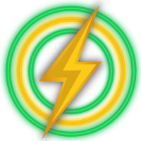

TunnelSats dashboard for MyNode
Scan the QR code or copy the BOLT11 Lightning invoice below to pay from your Lightning wallet (RTL, ThunderHub, Zeus, or Alby).
TunnelSats checks for payment automatically and updates this page once settled.
Loading the TunnelSats status…

Get started with TunnelSats
Route clearnet Lightning peer connections for your MyNode LND node through a dedicated WireGuard port, so peers see a TunnelSats address instead of your home IP.
- No KYC, pay with Lightning
- No traffic logs
- Keys generated on this server
- Dedicated forwarded port
Choose a plan
Quoted in sats at checkout · 100 GB/month includedCreates a BOLT11 Lightning invoice and provisions your WireGuard configuration automatically once paid.
-
1. Request an invoice Use the plan picker above or open the Actions & Plans tab in this dashboard. Bought on tunnelsats.com? Click Import Existing Config.
-
2. Pay with Lightning Scan the QR code or copy the BOLT11 invoice shown here. Auto-renew is optional via the Actions & Plans tab in this dashboard.
-
3. Apply the tunnel on MyNode Apply the tunnel in Mode A (1-click) or via SSH in Mode B;
tunnelsats.sh --managed mynodeisolateslnd.serviceinsidetunnelsats.slice.
- Lightning node LND
- Tunnel address Not assigned
- Public address Not configured
- Routing task
- Waiting for configuration
- Last confirmed
- Pending first sync
- WireGuard public key
- Not generated
Expires -
Extend subscription
Auto-renew OffOptional: connect a wallet in the Actions & Plans tab in this dashboard to renew automatically within 7 days of expiry.
Usage is shown once TunnelSats confirms it.
- Paid resets used
- Unknown
- Paid bandwidth reset
- Waiting for usage data
Manage MyNode host routing, buy a subscription in another region, or import, export, and connect NWC auto-renewal.
MyNode Execution Mode & Host Reconciler
Orchestrates host-level WireGuard routing (tunnelsats.slice) and LND hybrid Clearnet + Tor configuration on MyNode.
Automatically updates lnd_extra_config.conf and applies tunnelsats.sh --managed mynode from the MyNode UI via the scoped root reconciler.
Disables privileged execution from the web service (sudoers removed). Stages tunnelsatsv2.conf locally and provides copy-paste SSH commands.
| Subsystem | Live State | Host Target & Scope |
|---|---|---|
|
Execution Mode
|
Mode A: Integrated |
/etc/sudoers.d/tunnelsats-reconcile
|
|
Managed Dataplane
|
Not Installed |
tunnelsats.slice · inet tunnelsats
|
|
LND Extra Config
|
Tor-Only |
/mnt/hdd/mynode/settings/lnd_extra_config.conf
|
Back up before uninstalling: MyNode does not export app keys on uninstall. Click Backup .conf in the top header to save a copy of your tunnelsatsv2.conf before uninstalling TunnelSats or reflashing your device.
sudo /usr/local/sbin/tunnelsats-reconcile status
Switch Server Region / Buy New Subscription
Generates a new WireGuard key & port in the selected region
Asks TunnelSats to open a TCP connection to your node at
Not configured.
Inbound TCP port check only; does not verify outbound VPN
egress.
WireGuard (wg-quick@tunnelsatsv2.service),
tunnelsats.slice, and the fail-closed
tunnelsats-killswitch.service (inet tunnelsats)
run natively on the MyNode host kernel via
tunnelsats.sh --managed mynode --impl lnd. To inspect
the live tunnel and routing rules, attach to your MyNode device over
SSH:
ssh admin@mynode.local
-
sudo /usr/local/sbin/tunnelsats verify --jsonManaged dataplane and kill-switch attestation -
sudo wg show tunnelsatsv2WireGuard interface and peer handshake -
ip rulePolicy routing rules (priority 21821 to table 51820) -
ip route show table 51820Tunnel routing table (default dev tunnelsatsv2) -
sudo systemd-run -q -P --slice=tunnelsats.slice curl -4s https://ifconfig.meIPv4 egress inside tunnelsats.slice (returns TunnelSats VPN IP) -
sudo systemd-run -q -P --slice=tunnelsats.slice curl -6s https://ifconfig.meIPv6 leak test inside tunnelsats.slice (blocked by kill switch)
tunnelsats-killswitch.service)
Only lnd.service runs inside tunnelsats.slice. Bitcoin Core, Tor, and SSH stay on your normal host network.
If WireGuard drops or your plan expires, kernel nftables rules block clearnet packets from LND while keeping Tor (127.0.0.1:9050) active.
Renew your plan to resume clearnet routing, or click Restore Tor-Only Mode in Actions & Plans anytime.